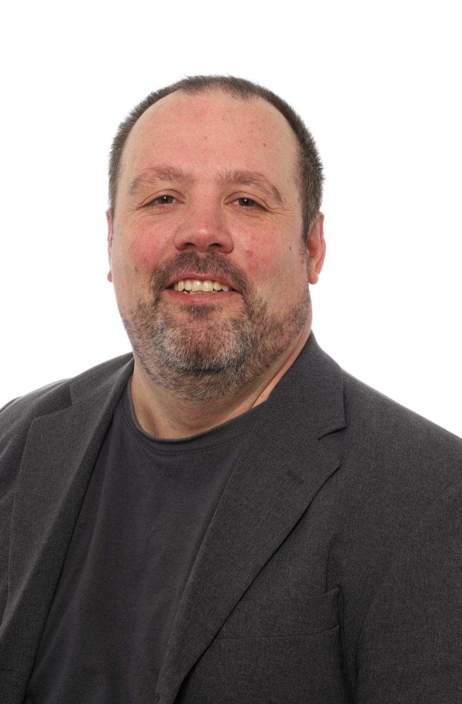

Begeisterung für Code trifft auf fundierte Berufserfahrung.
Als angehender Fachinformatiker für Anwendungsentwicklung suche ich ab März 2027 ein Praktikumsteam im Raum Köln, Bonn oder Kreis Euskirchen, in dem ich tatkräftig mit anpacken und mich fachlich weiterentwickeln kann. Im Gepäck habe ich ein solides Fundament im Software- und System Engineering sowie über 20 Jahre Praxis in Prozessorganisation und Teamarbeit – verlässlich, wissbegierig und lösungsorientiert.

Profil & beruflicher Antrieb
Für die sechsmonatige Praxisphase meiner zweijährigen Umschulung zum Fachinformatiker für Anwendungsentwicklung am Berufsförderungswerk Köln suche ich ab dem 01. März 2027 ein Unternehmen im Raum Köln, Bonn oder Kreis Euskirchen, in dem ich von Beginn an verlässlich und engagiert an realen Softwareprojekten mitwirken kann.
In meiner Qualifizierung liegt der methodische Schwerpunkt auf fundiertem Software- und System Engineering: von der sauberen objektorientierten Programmierung mit Python und Java über relationale Datenbankmodelle und komplexe Abfragen via SQL bis hin zum Verständnis moderner System- und Netzwerkarchitekturen. Ich verfüge über ein solides algorithmisches Grundverständnis und arbeite mich dank ausgeprägter Eigeninitiative zügig in neue Frameworks, Schnittstellentechnologien und Systemumgebungen (Linux & Windows) ein. Mein praktisches Know-how vertiefe ich kontinuierlich durch eigene Implementierungen – von Automatisierungsskripten über serviceorientierte Backend-Tools bis hin zu containerisierten Diensten.
Reale betriebliche Abläufe, logistische Schnittstellen und komplexe Prozessketten sind mir durch meine mehr als 20-jährige Berufspraxis bestens vertraut. Dieses Fundament hilft mir dabei, fachliche Anforderungen strukturiert zu erfassen, analytisch zu durchdringen und in wartbare, saubere Software zu übersetzen. Verantwortungsbewusstsein, Zuverlässigkeit und eine selbstständige Arbeitsweise sind dabei für mich das Fundament jeder Zusammenarbeit.